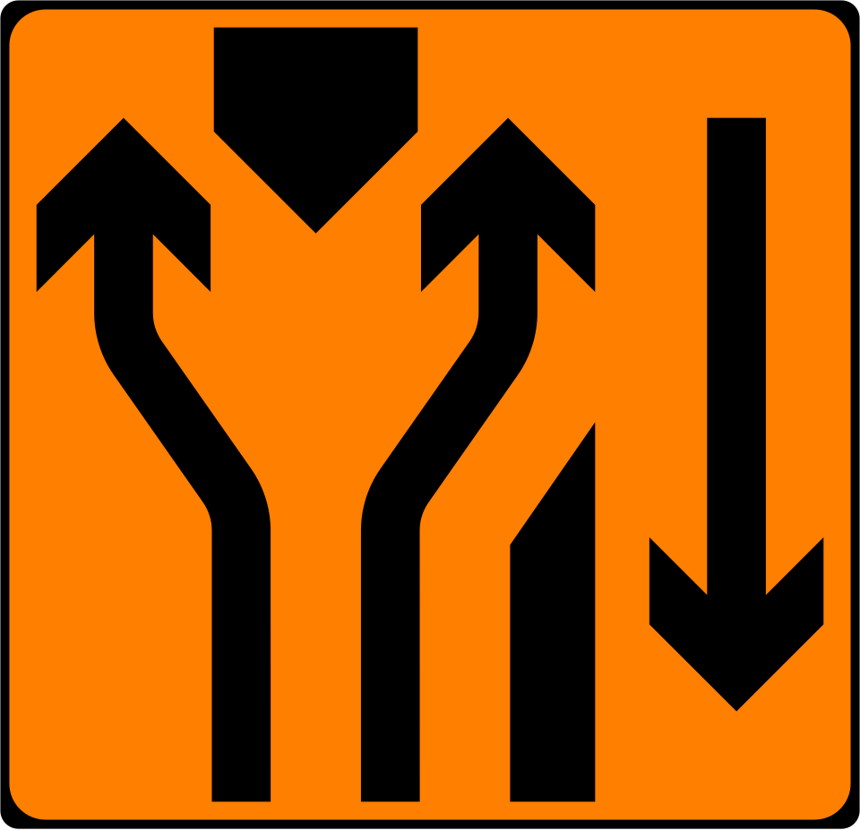
This sign looks so cool.
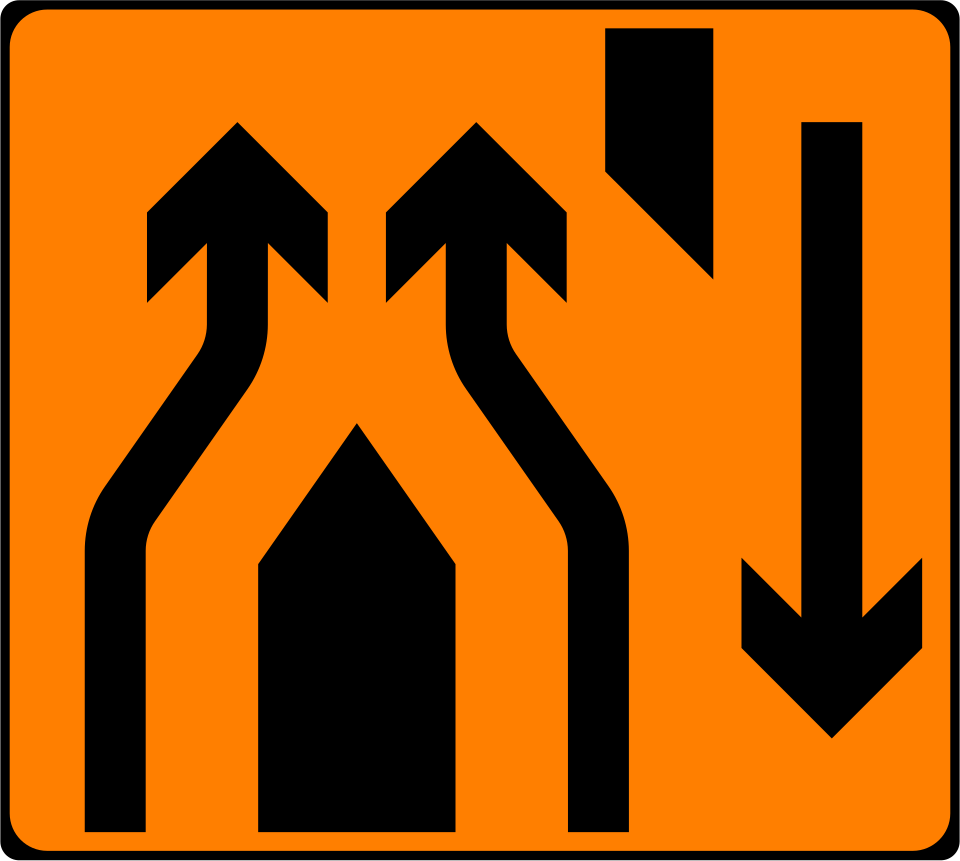
This is art.
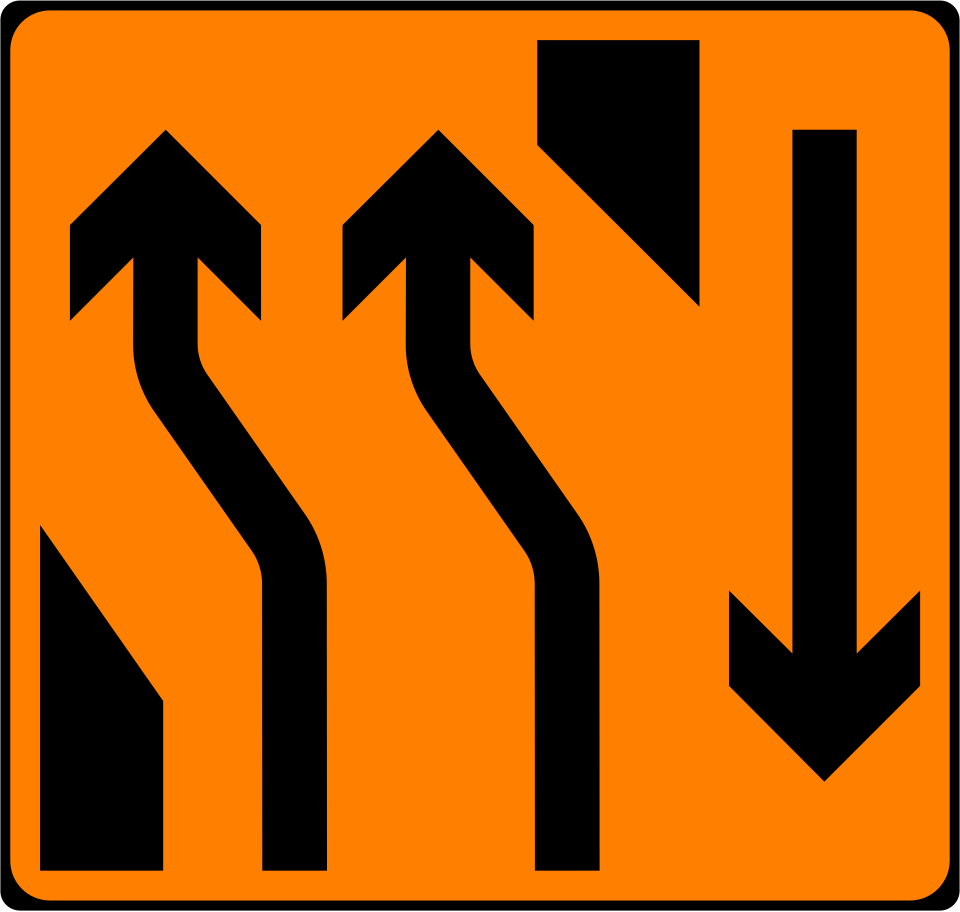
Two lanes crossing over in the back?
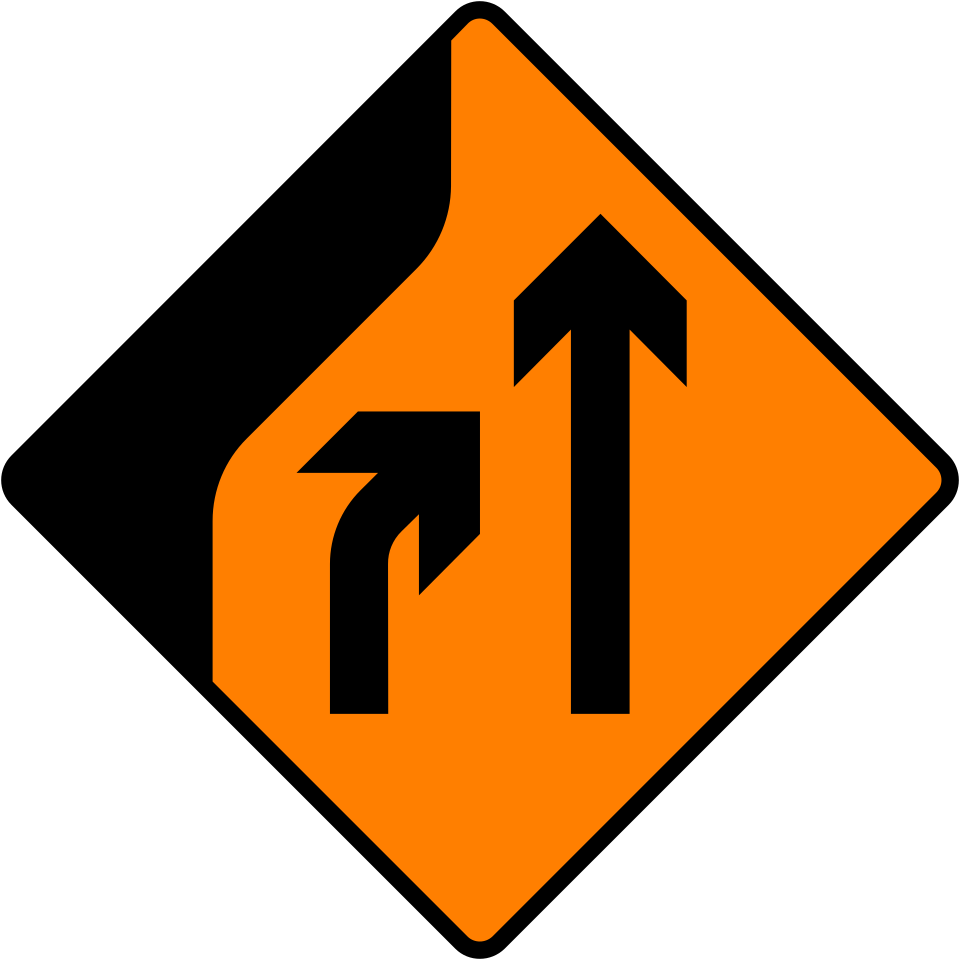
Merging to the right. (The road is)
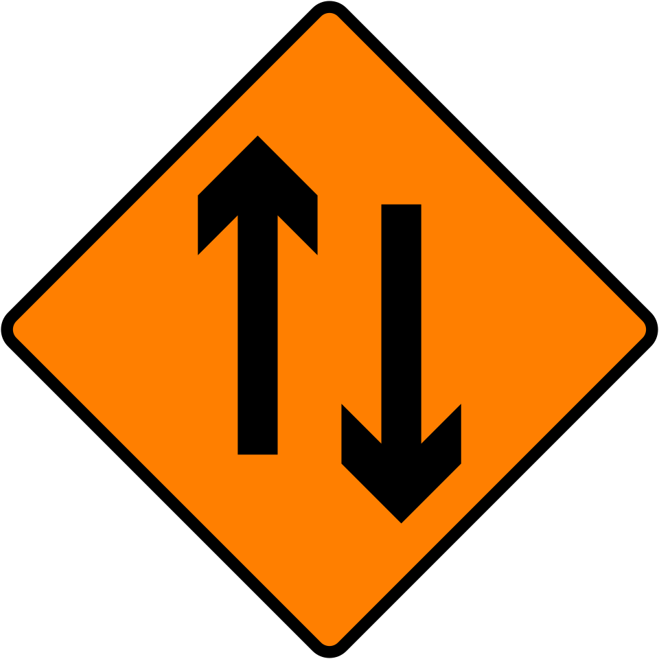
Two way.
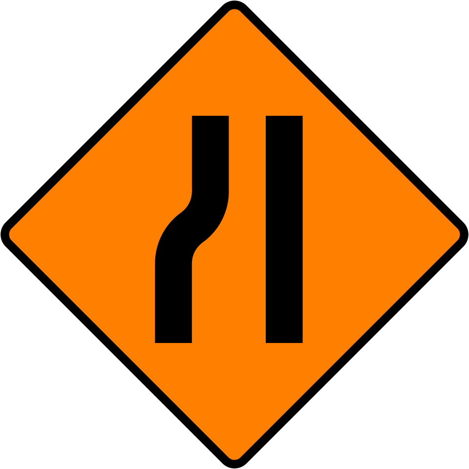
The left side is quite narrow ahead.
The right side is quite narrow ahead.
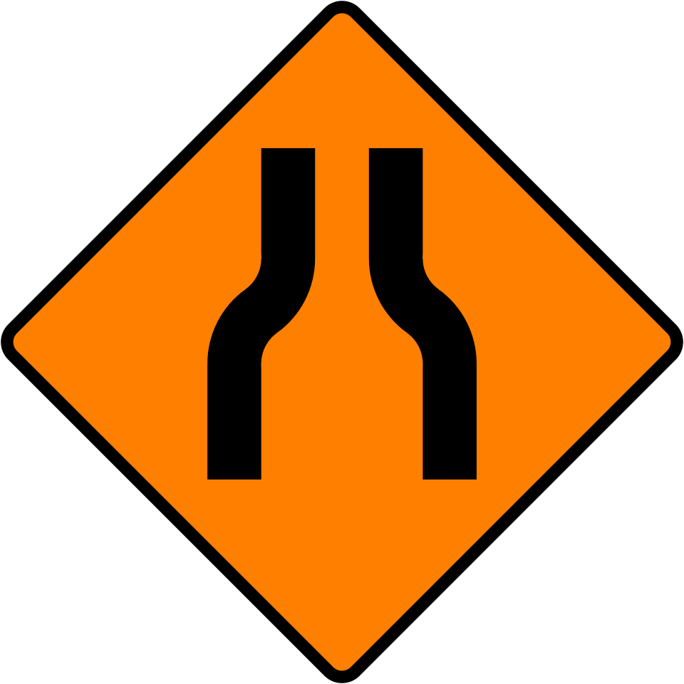
Both sides are quite narrow ahead.
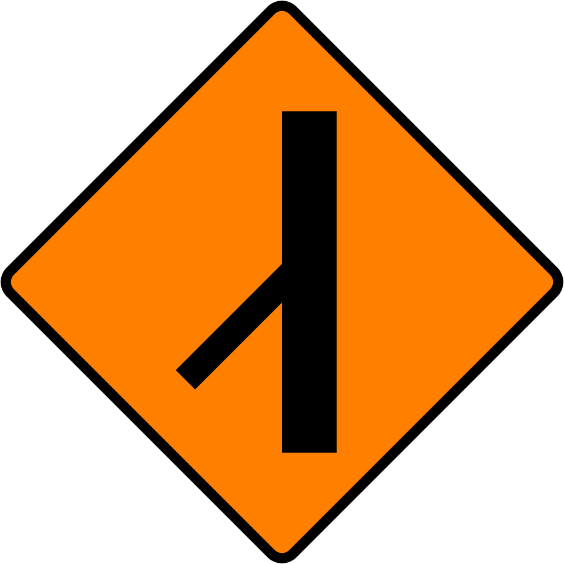
There is Merging Traffic from Left,
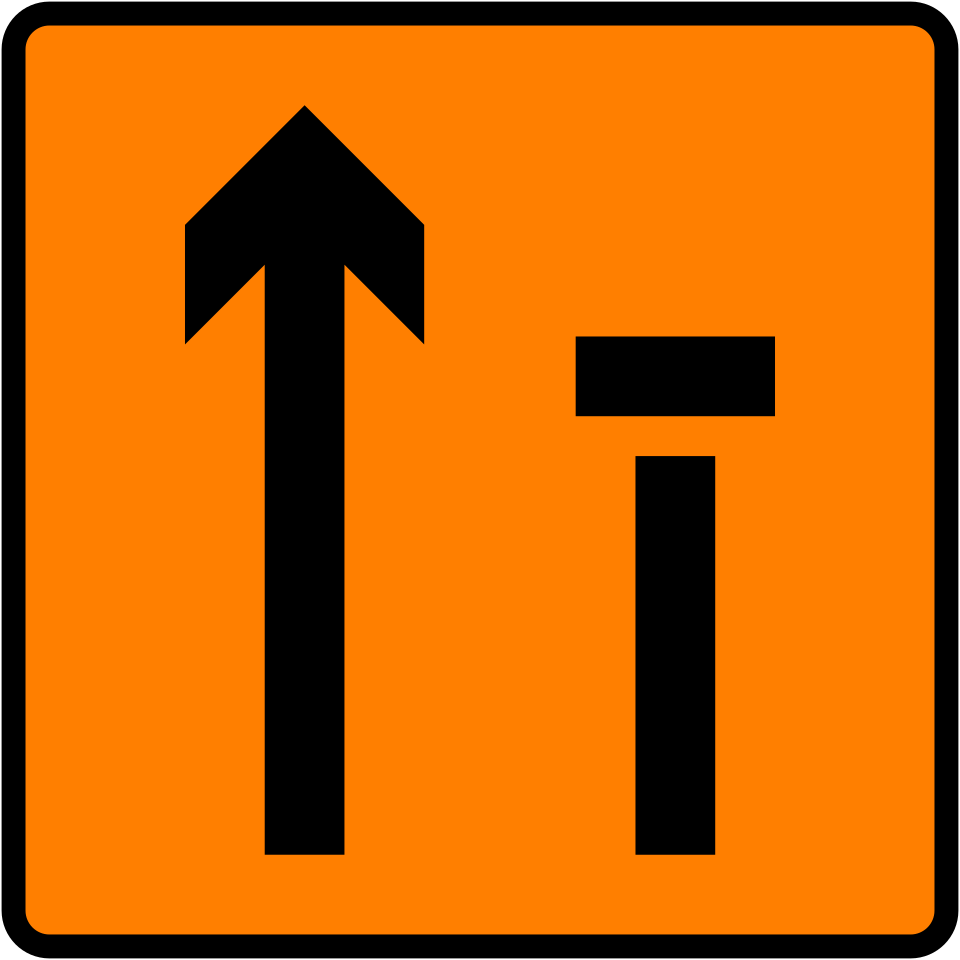
Lane 2 of 2 is closed.
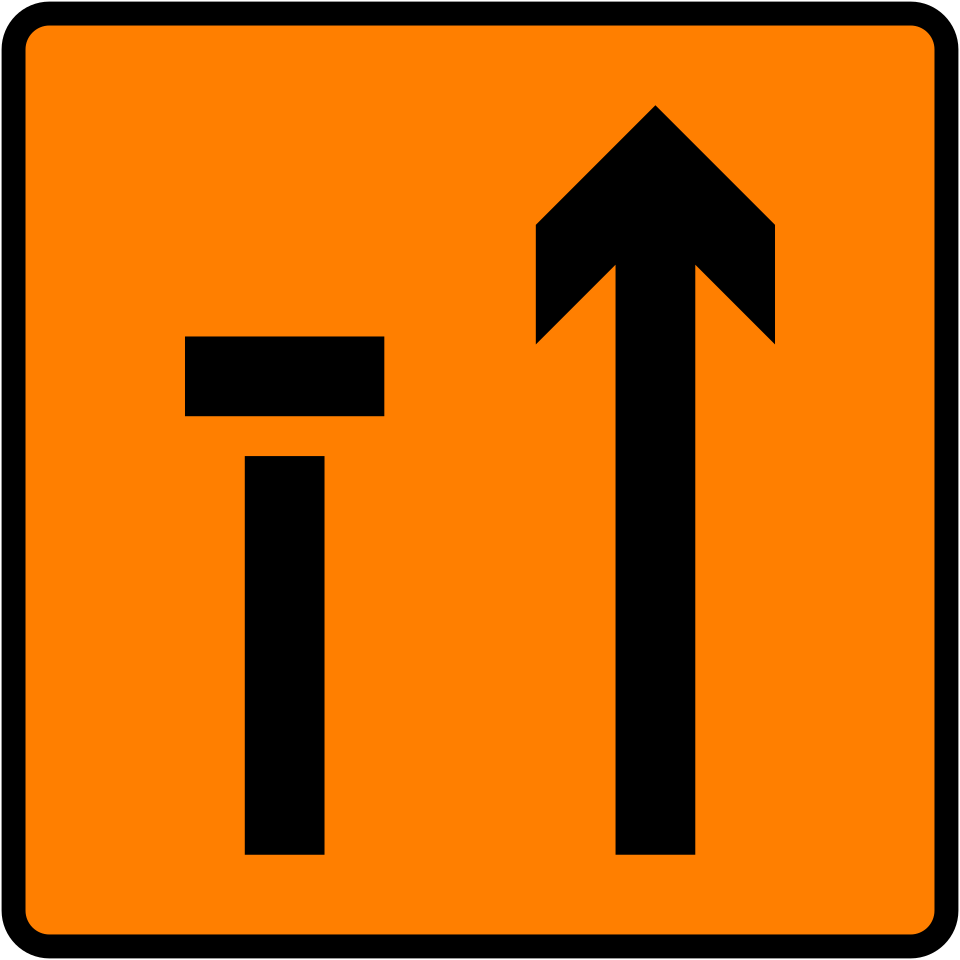
Lane 1 of 2 is Closed
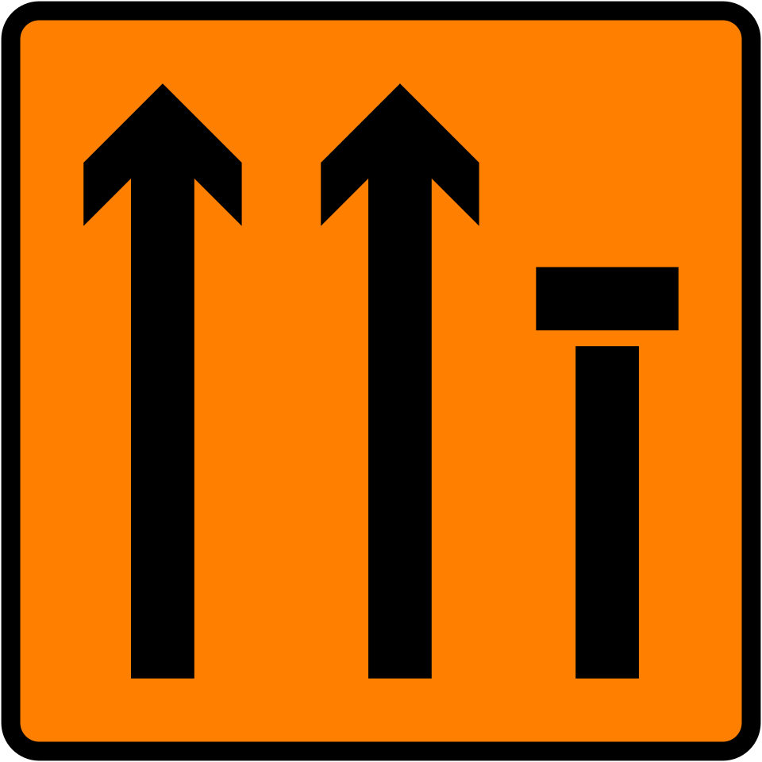
Lane 3 of 3 is Closed on level 3. (I guess?)